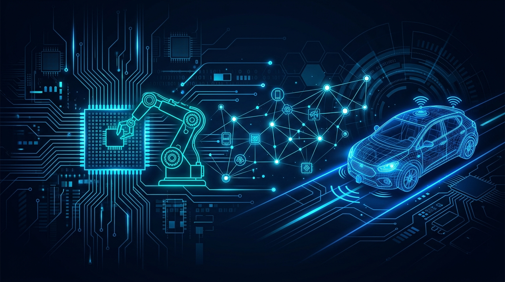
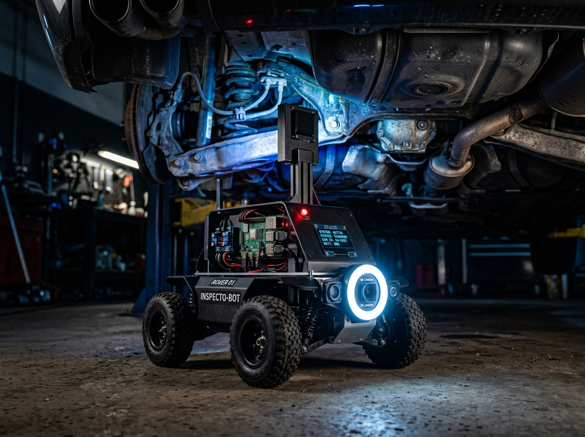
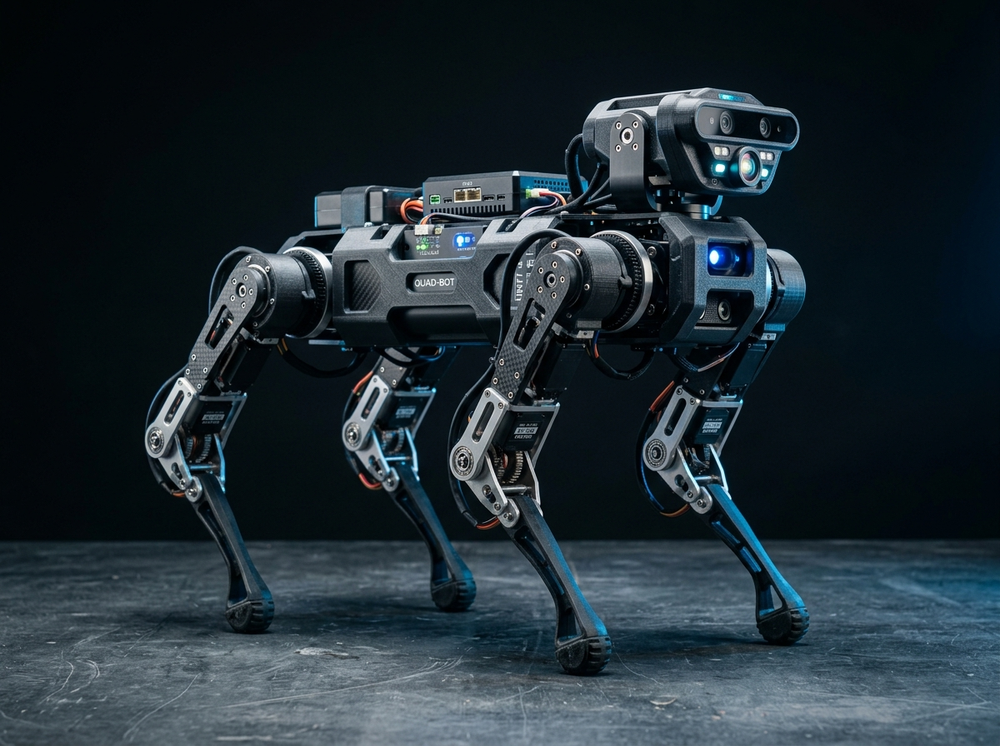
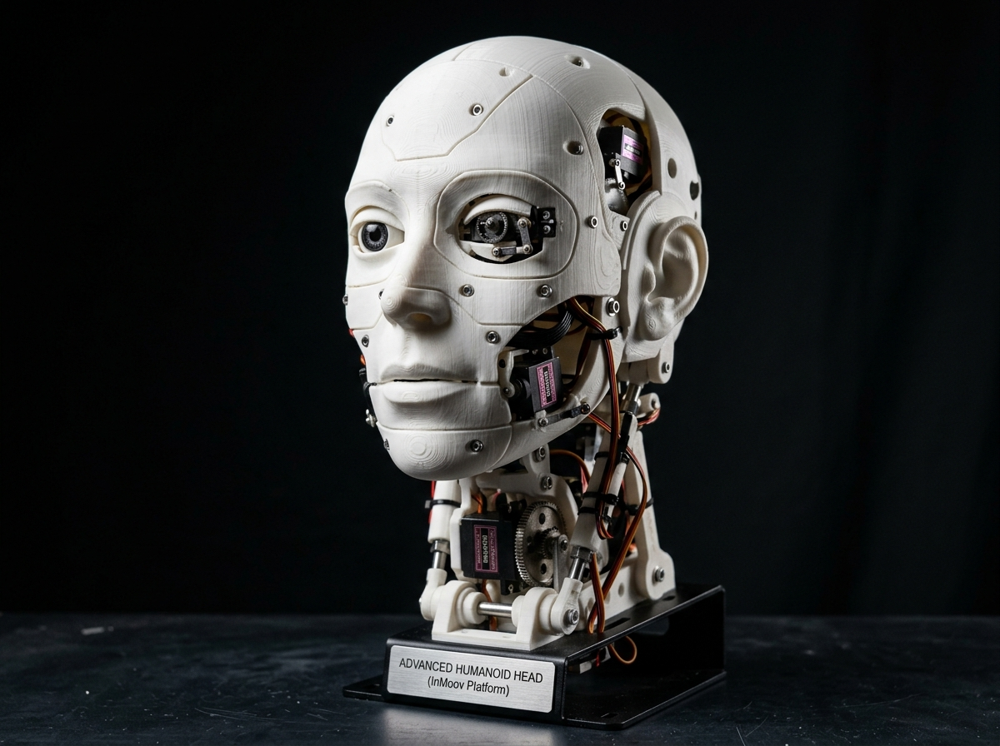

Embedded & Robotics Engineer · Autonomous Systems · IoT & Edge Computing
2+ years building production-grade autonomous robots and end-to-end IoT platforms — from bare-metal firmware and sensor fusion to computer vision pipelines and cloud-connected REST backends. I own full system life-cycles: prototype → integration → field deployment.
I'm a passionate Embedded & Robotics Engineer who thrives at the intersection of hardware, firmware, and intelligent software — building systems that sense the world and act on it.
My engineering career has been defined by end-to-end ownership. At Tarcin Robotic LLP, I took an autonomous inspection rover from concept through hardware design, embedded firmware, navigation logic, and a full computer vision pipeline. That means I've shipped real robots to real customers.
Alongside robotics, I've designed a complete IoT smart-home platform with ESP32 devices, cloud-connected APIs, secure remote access tunnels, and a PostgreSQL backend — running live on a self-hosted Linux/Proxmox infrastructure.
I'm a strong believer in clean code, thorough testing, and systems thinking. Whether it's optimizing motor control loops in C/C++,Python , designing RESTful APIs in FastAPI, or containerizing services with Docker — I bring the same engineering rigour to every layer.
Sethu Institute of Technology
Graduated with a strong foundation in embedded systems, signal processing, microcontroller programming, and communication protocols — directly applied to every project since.
I believe great engineers own problems end-to-end. I don't hand off broken prototypes — I debug down to the register level, trace through packet logs, and stay until it works in the field.
Navigation, mission planning, sensor fusion, real-world deployment
Edge firmware, MQTT, REST APIs, cloud backends, remote access
OpenCV pipelines, automated image capture, camera integration
Real products. Real deployments. Real impact.
Joined as the embedded systems engineer responsible for the full development lifecycle of the company's flagship product — an autonomous under-chassis inspection rover. Also contributed to advanced robotics R&D at Tarcin, building a NOVA SM3-inspired quadruped walking robot and an InMoov humanoid head as internal capability demonstrations. Led IoT platform development, owning architecture through to production deployment.
Led end-to-end development of an autonomous under-chassis inspection rover for commercial Kia vehicle inspection via ClearQuote. Managed hardware selection (Raspberry Pi, camera, motor drivers, IMU, OLED), embedded firmware, navigation logic, and the complete image acquisition pipeline from scratch.
Implemented a mission sequencer using IMU feedback for dead-reckoning navigation and closed-loop DC motor control on Raspberry Pi. The rover reliably executes pre-programmed inspection paths under vehicles with no human intervention.
Built an OpenCV-based image capture pipeline triggered by mission waypoints, capturing 50 high-resolution under-chassis images per vehicle inspection cycle — replacing a fully manual process.
Architected and deployed an end-to-end smart-home automation platform: ESP32 MQTT firmware, FastAPI + PostgreSQL REST backend, device registration/control/status APIs, Nginx reverse proxy, and a Cloudflare Tunnel for secure remote access — all running on a self-hosted Linux server, supporting 8 registered devices.
Designed, built, and debugged systems across Raspberry Pi, ESP32, Arduino Uno/Mega, and NodeMCU platforms. Covered full hardware-software integration, bench testing, field troubleshooting, and deployment handoff.
Built a 12-DOF quadruped walking robot from the ground up as part of Tarcin's internal robotics R&D initiative. Assembled the full mechanical frame, wired 12 MG996R servo motors across four legs, and developed custom inverse kinematics in embedded C for smooth leg trajectories. Programmed and tuned crawl, trot, and turn gaits on an Arduino Mega, achieving stable static and dynamic balance on flat and inclined surfaces. This project expanded the company's technical capability in legged locomotion systems.
Designed and built a fully functional InMoov open-source humanoid head as a robotics capability demo at Tarcin. Printed all structural components on an FDM 3D printer, integrated 5 servo motors for head pan/tilt and binocular eye movement, and developed Arduino firmware for smooth coordinated multi-servo control. Built a custom wiring harness and power distribution board inside the head cavity, and implemented a serial command interface for real-time remote control. Demonstrated the system to showcase the company's humanoid robotics expertise to prospective clients.
From concept to deployment — every project is a complete system, not a demo.

Client: ClearQuote × Kia Motors
Designed a compact autonomous rover that navigates beneath vehicle chassis to conduct inspection missions for Kia vehicles at commercial service centres. The system eliminates manual under-vehicle inspection .
End-to-end IoT platform for remote home appliance control and monitoring. Built the entire stack — from ESP32 firmware to cloud-deployed APIs and a secure remote access tunnel — running live with 8 registered devices.

A multi-servo quadruped walking robot built from scratch, with custom leg kinematics and gait sequences programmed for stable locomotion. Inspired by the NOVA SM3 open-source platform.

3D-printed humanoid head with servo-driven head pan, tilt, and eye movement, built on the open-source InMoov platform with custom electronics integration.
A hands-on toolkit built from real products — not just tutorials.
Designed and runs a live smart-home system controlling 8 devices from anywhere in the world, on zero cloud subscription cost — built and maintained solo.
From an autonomous rover and a walking quadruped to a humanoid head — all hardware built, programmed, debugged, and demonstrated from scratch.
Every project spans the full stack — hardware selection, PCB-level integration, firmware, computer vision, APIs, cloud deployment, and field handoff.
Production experience across Raspberry Pi, ESP32, Arduino, Pico W, and NodeMCU — hardware debug skills that come from shipping, not just coding.
I'm actively looking for embedded systems, robotics, or IoT engineering roles at forward-thinking companies. If you're building something ambitious — let's talk.
Whether you have a role, a project, or just want to talk robots — I respond to every genuine message, usually within 24 hours.
Open to full-time roles, in Embedded Systems, Robotics, and IoT Engineering.